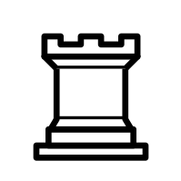
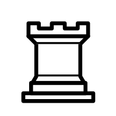

Vi har Crown Chess har dedicerat våran tid åt att
se till att varje "person" kan spela schack. I alla fall på en elementär nivå så att
nybörjare inte känner att det är lika svårt att komma in i schack som de trodde.
Om fler människor kan spela schack och varedar det som vi gör hadde världen varit i fred eftersom
alla världens conflikter hade lösts genom det
Två av världens smartaste människor
kämmpar för makt i den nya världen vi har skapat.
Efter du lämnat denna sida hoppas vi att vi att du har lärt dig på en väldigt elementär nivå hur schack
fungerar och hur man spelar det.
Snabbt om spelet
Schack är ett brädspel som man använder sina egna pjäser för att
fånga sin motståndarens pjäser och spelet är över när en spelares kung är fast i en position där vad hen en gör kommer deras kung
att bli fångad av motståndarens pjäser, Detta kallas schackmatt . när man förklarar det på det viset verkar kanske schack som ett rätt simpelt spel
som kanske till och med är ganska lätt. och du skulle båda ha rätt och fel eftersom att
spelet är rätt lätt att plocka upp men spelarna runt omkring details har tänkt upp alla möjliga strategier och bemästrat spelet.
Båda spelarna börjar med identiska pjäser som vi kommer gå in på mer detalj på längre ner på hemsidan
på varsin sida av schackplanen. Ens pjäser kommer antingen vara svarta eller vita men den enda skildnaden är att vit altid börjar först.
Snabbt om Pjäser
I schack finns det sex olika pjäser, deras namn är kung, drottning, torn, häst, bonde och Löpare vad som skiljer dom åt är hur de kan röra sig
runt brädan.
kungen kan bara röra sig ett steg åt varje håll men är också en mycket viktig pjäs som bör skyddas på grund av att om ens kung hamnar i en position där vad man en gör så kommer den fångas förlorar du.
Drottningen kan röra sig i en rak linje men också diagonalt vilket gör pjäsen mycket kraftfull
Tornet rör sig i en rak linje, bonden kan bara gå rakt framåt men kan bara fånga en pjäs om den är ett diagonalt steg framför.
löpare kan bara gå diagonalt och hästar kan bara gå i ett L mönster. men den kan också hoppa över andra pjäser.
 
